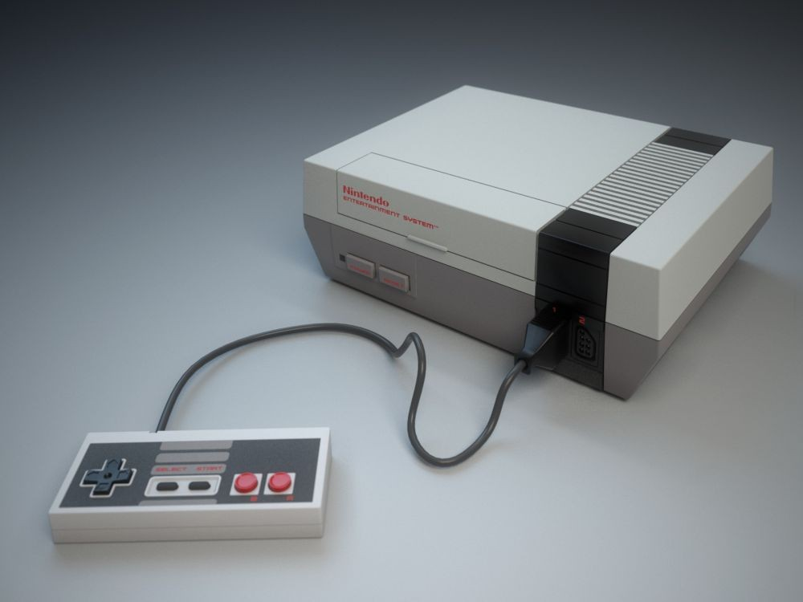

Wii menjadi konsol gaming pionir yang mempopulerkan game dengan gerak tubuh. Berbagai kalangan dan umur senang memainkannya, menjadikan konsol ini sebagai konsol keluarga..
Buy
Jika tidak ada SEGA Genesis, maka Sonic si landak pun tidak akan pernah muncul dan tercipta. Konsol ini menjadi konsol perlambangan semangat era 90an.
BuyXbox original menjadi langkah awal Microsoft masuk ke ranah gaming. Selain itu berkat konsol ini pula, tepatnya karena fitur Xbox Live, game online via konsol menjadi populer..
BuyKonsol dari Sony ini memperkenalkan game bergaya 3D yang sangat fenomenal. Cek saja Metal Gear Solid dan Final Fantasy VII. Pada 1995, konsol PlayStation-lah yang mendorong industri gaming begitu jauh.
Buy
Sampai sekarang pun SNES masih dibahas dan diceritakan oleh para gamer ketika bernostalgia. Konsol inilah yang memunculkan grafis 16-bit. Namun lebih dari itu, kemunculan sejumlah game legendaris yang membuat nama SNES tak pernah bisa terlupakan. Super Mario, Zelda, Donkey Kong, semuanya muncul di konsol ini
Buy
Konsol PlayStation yang ada di jaman sekarang ini. Begitu banyaknya game eksklusif pada konsol ini mewajibkan PlayStation 4 masuk ke dalam daftar konsol terbaik. Perlu diingat saja keeksklusifan itu bukan tanpa sebab. PlayStation 4 memiliki kualitas grafis yang sangat tinggi serta kinerja yang baik.
Buy
Switch mengubah wajah konsol handheld yang bisa dibawa ke mana-mana. Nintendo Switch mengawali bentuk konsol hybrid yang bisa dibawa-bawa dan konsol tradisional. Terbukti sampai sekarang pun penjualan konsolnya masih berlanjut meningkat.
BuyNES menjadi inovasi besar bagi para perusahaan untuk membuat konsol. Setara dengan SNES, NES melambungkan banyak nama game yang populer hingga sekarang. Di konsol ini pula, ada beberapa teknologi cutting-edge yang tercipta seperti pistol untuk Duck Hunt.
Buy
Sebagai konsol gaming dengan penjualan terbanyak hingga saat ini, jelas saja PS2 harus masuk daftar. Banyak game bagus hadir di sini dan datang dari berbagai genre: RPG, shooter, mini-game dan sebagainya
Buy
Sebagai saingan dari PS1, N64 memberikan pengalaman hebat dalam merasakan permainan 3D. Judul franchise Zelda yang terbaik saja muncul di konsol ini, yaitu The Legend of Zelda: Ocarina of Time.
Buy